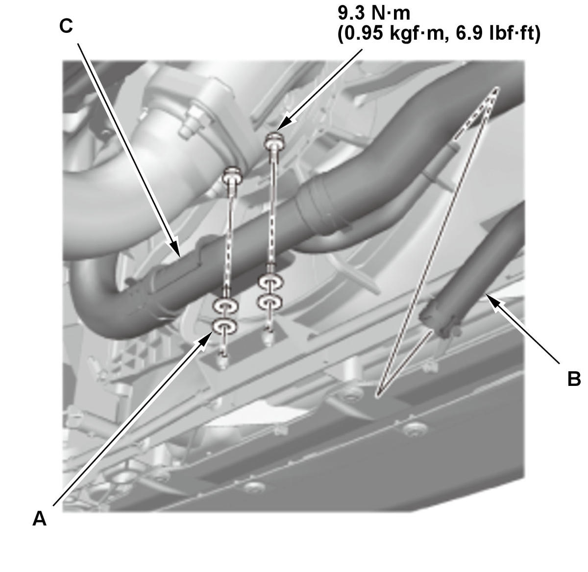
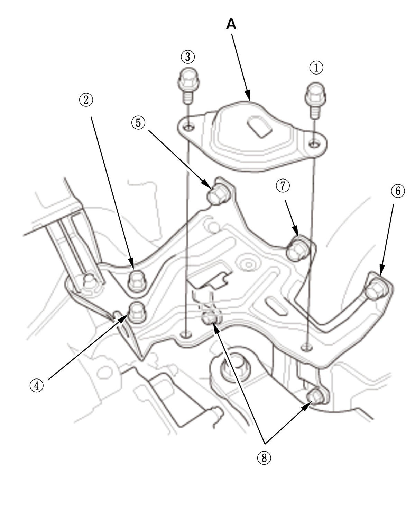

Engine Removal and Installation (K20C2): Installation
- Torque Rod Bracket - Install
1. Install the torque rod bracket, then tighten their bolts to the specified torque.
- Engine - Install
1. Position the engine/transmission assembly under the vehicle, and be sure that they are properly positioned. Carefully lower the vehicle, and stop with the installation position of the engine/transmission assembly.
2. Install the universal lifting eyelet with a commercially available spacer (A) to the chain case.
3. Attach the chain hoist to the universal lifting eyelet (B) and the transmission hanger (C), then lift the engine/transmission until it is securely supported by the chain hoist.
- Transmission Mount Bracket Mounting Bolt and Nut - Loosely Install
M/T
CVT
- Engine - Support
1. Lift and support the engine with a jack and a wood block under the oil pan. - Side Engine Mount - Loosely Install
- Vehicle - Lift
1. Raise the vehicle. - Front Driveshaft - Install
- Front Subframe - Support
1. Set the subframe adapter (VSB02C000016) on a transmission jack (A), line up the slots in the arms with the bolt holes on the corner of the jack base, and tighten the bolts. 2. Attach the subframe adapter to the front subframe (B).
- Front Subframe - Install
- Lower Arm Mounting Bolt - Install
- Torque Rod Mounting Bolt - Loosely Install
- All Engine Mount Mounting Bolt and Nut - Tighten
- Vehicle - Lift
1. Raise the vehicle. - Front Brace - Install
- Lower Arm Boll Joint - Connect
- Tie-Rod End Ball Joint - Connect
- Stabilizer Link - Connect
- Exhaust Pipe A - Install
- Connector (EPS) - Connect
- Vehicle - Lift
1. Lower the vehicle. - Steering Joint - Connect
- A/C Compressor - Install (With A/C)
- Radiator Assembly - Install
- Lower Radiator Pipe - Install

Courtesy of HONDA, U.S.A., INC.1. Connect expansion tank outlet hose B. 2. For some models: Install the washers (A).
3. Install the lower radiator pipe (C).
- Heater Hose - Connect
- Fuel Feed Hose - Connect
1. Connect the fuel feed hose (A), then install the quick-connect fitting cover (B). - EVAP Canister Purge Hose, Vacuum Hose, and Water Bypass Hose - Connect
1. Connect the EVAP canister purge hose (A), the vacuum hoses (B), and the water bypass hose (C). - Slave Cylinder - Install (M/T)
- Change Wire - Connect (M/T)
- Shift Cable - Connect (CVT)
- Engine Wire Harness - Install
1. CVT: Install the TCM harness (A).
2. Install the engine wire harness (B).
3. Connect the cables (C) and the connectors (D).
4. Install the covers (E).
- PCM - Install
- Transmission Fluid - Refill
- Transmission Gear - Check
1. Check that the transmission shifts into all gears smoothly. - 12 Volt Battery Set Patch - Install

Courtesy of HONDA, U.S.A., INC.1. Loosen the 12 volt battery base mounting bolts. 2. Install the battery set patch (A).
3. Tighten the 12 volt battery set patch mounting bolts and the 12 volt battery base mounting bolts, in the numbered sequence shown, to the specified torque.
NOTE: Bolt is not on all models.
Specified Torque: , , , and 9.3 N.m (0.95 kgf.m, 6.9 lbf.ft) , , , and 22 N.m (2.2 kgf.m, 16 lbf.ft) - 12 Volt Battery - Install
- Air Cleaner - Install
- Vehicle - Lift
1. Raise the vehicle. - Engine Undercover - Install
- Engine Undercover Lid - Install
- Front Wheel - Install
- Vehicle - Lift
1. Lower the vehicle. - Fuel Leak - Check
1. Turn the vehicle to the ON mode, but do not start the engine. After the fuel pump runs for about 2 seconds, the fuel line will be pressurized. Repeat this two or three times, then check for fuel leakage. - Engine Oil - Refill
- Engine Coolant - Refill
- Fluid Leak - Check
- PCM - Reset
- CKP Pattern - Clear/Learn
- PCM Idle - Learn
- Idle Speed - Inspect
- Ignition Timing - Inspect
- Wheel Alignment - Check
- VSA Sensor Neutral Position - Memorize